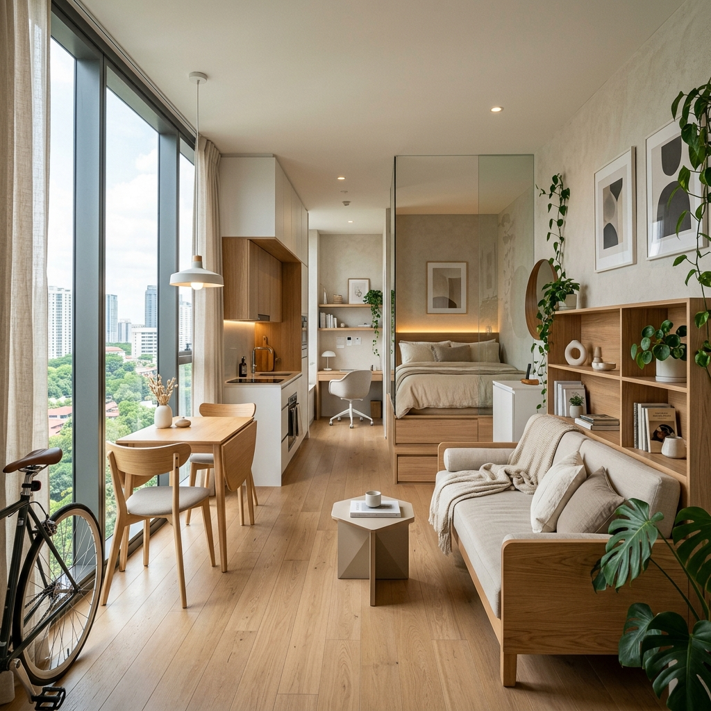

การเป็นเจ้าของคอนโดขนาดกะทัดรัดในพัทยาไม่ใช่ข้อจำกัด — แต่มันคือโอกาสในการสร้างพื้นที่ที่รู้สึกถึงความตั้งใจ มีสไตล์ และหรูหรากว่าขนาดพื้นที่จริง รากฐานของการออกแบบตกแต่งภายในคอนโดขนาดเล็กที่ดีเริ่มต้นที่สีสัน เลือกใช้โทนสีอ่อนที่เป็นกลาง — ขาวนวล โทนทรายอบอุ่น และเทาหินอ่อน — เพื่อสะท้อนแสงธรรมชาติริมฝั่งที่ทำให้การใช้ชีวิตในพัทยามีความพิเศษ จับคู่โทนสีเหล่านี้กับผ้าม่านโปร่งสูงจรดเพดานที่ช่วยดึงสายตาขึ้นด้านบน ขยายความสูงและความสว่างของทุกห้องได้อย่างชัดเจน เพียงแค่การตัดสินใจง่ายๆ เหล่านี้ก็สามารถเปลี่ยนความรู้สึกกว้างขวางและต้อนรับของคอนโดพัทยาของคุณได้ตั้งแต่ก้าวแรกที่เดินเข้ามา
การเลือกเฟอร์นิเจอร์อย่างชาญฉลาดคือการลงทุนที่ให้ผลลัพธ์สูงสุดในคอนโดขนาดกะทัดรัด ให้ความสำคัญกับชิ้นส่วนที่ใช้งานได้หลากหลาย — โซฟาเบดสำหรับรองรับแขก โต๊ะทานข้าวพับได้เพื่อเพิ่มพื้นที่ว่าง เตียงที่มีช่องเก็บของในตัว และสตูลที่สามารถเก็บของซ่อนไว้ได้ ชั้นวางติดผนัง โต๊ะแบบลอยตัว และตู้เก็บของแนวตั้งช่วยทวงคืนพื้นที่พื้นจากเฟอร์นิเจอร์ชิ้นใหญ่ มอบความงามที่ทันสมัยและเรียบหรูให้คอนโดของคุณ ซึ่งถ่ายรูปออกมาสวยงามมาก — สิ่งสำคัญหากคุณวางแผนที่จะปล่อยเช่าคอนโดพัทยาบน Airbnb หรือให้กับผู้เช่า กระจกที่จัดวางอย่างมีกลยุทธ์ก็ทรงพลังไม่แพ้กัน สร้างภาพลวงตาของความลึกที่เพิ่มขึ้นเป็นสองเท่า ทำให้แม้แต่ห้องสตูดิโอก็รู้สึกเปิดกว้างและโปร่งสบาย
ท้ายที่สุด นำจิตวิญญาณแห่งไลฟ์สไตล์ริมทะเลของไทยเข้ามาไว้ในบ้าน ต้นไม้เขตร้อนที่ดูแลรักษาง่าย — พลูด่าง ลิ้นมังกร หรือเดหลี — เพิ่มความสดชื่นและสีสันโดยไม่เปลืองพื้นที่ เลือกธีมการออกแบบที่สอดคล้องกัน — สไตล์มินิมอลสแกนดิเนเวีย ชิครีสอร์ตเขตร้อน หรือโมเดิร์นคนเมืองที่โฉบเฉี่ยว — และนำไปใช้กับทุกพื้นผิว ผ้า และของตกแต่ง ความงามที่กลมกลืนกันทำให้คอนโดเล็กๆ รู้สึกเหมือนถูกออกแบบมาอย่างตั้งใจมากกว่าที่จะดูอึดอัด และยังเพิ่มเสน่ห์ที่แท้จริง ไม่ว่าคุณจะอาศัยอยู่ในพื้นที่นั้นเองหรือจัดแสดงให้ผู้เช่าคอนโดในพัทยาที่คาดหวังได้ชม ในยูนิตกะทัดรัดที่ตกแต่งอย่างดี ทุกตารางเมตรจะทำงานอย่างคุ้มค่า — และสร้างความประทับใจได้มากกว่า